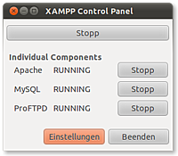

XAMPP
Dieser Artikel wurde für die folgenden Ubuntu-Versionen getestet:
Dieser Artikel ist größtenteils für alle Ubuntu-Versionen gültig.
Zum Verständnis dieses Artikels sind folgende Seiten hilfreich:
 XAMPP
XAMPP  ist eine Zusammenstellung von freier Software vorwiegend aus dem Umfeld eines LAMP-Servers. LAMP ist ein Akronym für den kombinierten Einsatz von Programmen auf Basis von Linux, um dynamische Webseiten zur Verfügung zu stellen. Die einzelnen Buchstaben des Akronyms stehen für die verwendeten Komponenten: Linux, Apache, MySQL und PHP bzw. Perl (ab XAMPP 5.5.30 und 5.6.14 wird XAMPP mit der Datenbank MariaDB anstelle von MySQL ausgeliefert).
ist eine Zusammenstellung von freier Software vorwiegend aus dem Umfeld eines LAMP-Servers. LAMP ist ein Akronym für den kombinierten Einsatz von Programmen auf Basis von Linux, um dynamische Webseiten zur Verfügung zu stellen. Die einzelnen Buchstaben des Akronyms stehen für die verwendeten Komponenten: Linux, Apache, MySQL und PHP bzw. Perl (ab XAMPP 5.5.30 und 5.6.14 wird XAMPP mit der Datenbank MariaDB anstelle von MySQL ausgeliefert).
XAMPP ermöglicht das einfache Installieren und Konfigurieren des Webservers Apache mit einer Datenbank und den Skriptsprachen Perl und PHP (mit PEAR). Das X steht hierbei für die verschiedenen Betriebssysteme, auf denen es eingesetzt werden kann. Zusätzlich enthalten sind andere nützliche Werkzeuge wie den FTP-Server ProFTPD, den Mailserver Mercury, phpMyAdmin, Webalizer und TLS-Vrschlüsselung.
Hinweis:
Das häufig für Windows empfohlene XAMPP bereitet unter Ubuntu immer wieder Probleme. Da Ubuntu (fast) alle in XAMPP enthaltenen Serverdienste auch über die offiziellen Paketquellen bereitstellt, sollten bevorzugt die Einzelpakete genutzt werden. Konkret wird das im Artikel LAMP erläutert.
Eigenschaften und Funktionen¶
Ziel von XAMPP ist es, eine besonders einfache Installation zu erreichen. Mit wenigen Mausklicks erhält man eine brauchbare Vorkonfiguration, die alleine teilweise recht lange dauern würde.
Achtung!
XAMPP ist ausschließlich eine Testumgebung für Entwickler und sollte nicht als öffentlicher Webserver verwendet werden! Dies erklärt auch die bewusst in Kauf genommenen Einschränkungen in Hinblick auf die Sicherheit von XAMPP (siehe unten).
Installation¶
Unter Linux installiert sich XAMPP komplett in das Verzeichnis /opt/lamp/. Eventuelle Installationen von Apache, PHP und MySQL aus der Paketverwaltung werden in der Regel nach /usr/bin/ oder /usr/sbin/ installiert. Während Dateikonflikte damit auszuschließen sind, ist es ratsam, vorhandene Dienste zumindest abzuschalten (oder zu deinstallieren).
Hinweis!
Fremdsoftware kann das System gefährden.
Die von SourceForge  heruntergeladene Datei (ca. 120 MiB) installiert man mit folgenden Befehlen im Terminal [1][2] (für Nutzer von 64-bit-Systemen steht eine extra Version zur Verfügung):
heruntergeladene Datei (ca. 120 MiB) installiert man mit folgenden Befehlen im Terminal [1][2] (für Nutzer von 64-bit-Systemen steht eine extra Version zur Verfügung):
chmod 755 xampp-linux-VERSION-installer.run sudo ./xampp-linux-VERSION-installer.run
Bereits vorhandene Dateien werden kommentarlos überschrieben. Bei Fehlermeldungen während der Installation empfiehlt es sich, einen vorhandenen XAMPP-Ordner im selben Verzeichnis zu löschen.
Wer den Zielordner anders benennen möchte, kann den Ordner nach der Installation umbenennen. Ältere Versionen (vor Version 1.8.2) wurden dagegen mit dem Befehl:
sudo tar xvfz xampp-linux-VERSION.tar.gz -C /opt
nach /opt/lampp entpackt.
XAMPP starten¶
Damit ist XAMPP nun einsatzbereit. Um XAMPP zu starten [3], reicht der folgende Befehl im Terminal aus:
sudo /opt/lampp/lampp start
Auf dem Bildschirm sollten nun folgende Mitteilungen zu sehen sein (die Versionsnummer kann abweichen):
Starting XAMPP for Linux 1.8.2-0... XAMPP: Starting Apache...ok. XAMPP: Starting MySQL...ok. XAMPP: Starting ProFTPD...ok.
Damit sind XAMPP bzw. der Apache, MySQL und evtl. ProFTPD gestartet und laufen.
Testen – Läuft der Server?¶
 Um zu testen, ob der Server auch wirklich läuft und einsatzbereit ist, kann man einfach auf den Apache zugreifen. Dazu gibt man in der Adresszeile des Browsers die eigene URL ein:
Um zu testen, ob der Server auch wirklich läuft und einsatzbereit ist, kann man einfach auf den Apache zugreifen. Dazu gibt man in der Adresszeile des Browsers die eigene URL ein: http://localhost (siehe localhost). Ist alles korrekt eingegeben und der Apache läuft, sieht man nun die Startseite von XAMPP (siehe Bild rechts). Auf der Startseite gibt es nun einen Link zum Testen der Installation und ein paar kleine Programmbeispiele.
Hinweis:
Hat man später diese Startseite durch seine eigene Seite ersetzt, kann man übrigens die XAMPP-Startseite immer noch unter http://localhost/xampp/ erreichen.
XAMPP stoppen¶
Mit einem ebenso einfachen und kurzen Befehl wird XAMPP bzw. der Apache, MySQL und evtl. ProFTPD wieder gestoppt:
sudo /opt/lampp/lampp stop
Auf dem Bildschirm sollten nun folgende Mitteilungen zu sehen sein (die Versionsnummer kann abweichen):
Stopping XAMPP for Linux 1.8.2-0... XAMPP: Stopping Apache...ok. XAMPP: Stopping MySQL...ok. XAMPP: Stopping ProFTPD...ok.
Damit sind XAMPP bzw. der Apache, MySQL und evtl. ProFTPD gestoppt und wurden beendet.
XAMPP per GUI starten/stoppen¶
 Eine komfortable Möglichkeit, um XAMPP zu starten/stoppen, bietet eine XAMPP-eigene GUI. Da der Ordner /opt/lampp/ Root-Rechte voraussetzt, startet man die folgenden Befehle mit Hilfe von gksu bzw kdesudo:
Bei der Nutzung von KDE:
kdesudo "python /opt/lampp/share/xampp-control-panel/xampp-control-panel.py"
Andere Desktop-Umgebungen:
gksu "python /opt/lampp/share/xampp-control-panel/xampp-control-panel.py"
Diese Befehle kann man auch dem Anwendungsmenü oder dem Panel hinzufügen [4] .
Es kann, je nach eingesetzter Ubuntuversion, dazu kommen, dass man eine Fehlermeldung beim Aufruf des Python-Befehls erhält. Dieser kann wie folgt aussehen:
Error importing pygtk2 and pygtk2-libglade
Um diesen zu umgehen, muss man das Paket python-glade2 installieren [6] .
Speicherort ändern¶
Die vom Anwender erstellten Webseiten (z. B. HTML oder PHP) werden im Verzeichnis /opt/lampp/htdocs/ gespeichert. Das ist auch der Ort, den XAMPP durchsucht, um selbige im Browser darzustellen. Um die oben genannten Root-Rechte beim Editieren der Dateien im Verzeichnis /opt/lampp/ umgehen zu können, kann man sich diesen Ordner in das eigene Homeverzeichnis verlinken:
mkdir ~/ORDNERNAME sudo ln -s ~/ORDNERNAME /opt/lampp/htdocs/$USER
Erreichbar ist das htdocs-Verzeichnis im Browser dann über den eigenen Benutzernamen via http://localhost/BENUTZERNAME/ bzw http://127.0.0.1/BENUTZERNAME/.
Erhält man eine Fehlermeldung (Zugriffsfehler: 403) beim Aufruf der Seite, so muss man die Datei /opt/lampp/etc/httpd.conf mit einem Editor [5] in einer Zeile (etwa im Bereich von Zeile 173) anpassen:
Die Zeile
User nobody
ändert man in
User BENUTZERNAME
Um XAMPP (respektive Apache) diese Änderung bekannt zu machen, muss man XAMPP neu starten. Danach sollte der 403-Fehler verschwunden sein.
Upgrade¶
Da XAMPP an der Paketverwaltung vorbei installiert wurde, muss man sich selbst um Updates/Ugrades kümmern. Zwei Gründe sprechen für das unter Umständen im Download-Verzeichnis angebotene Upgrade-Paket:
Die XAMPP-Distribution ist recht umfangreich, weshalb sich bei einer schon bestehenden XAMPP-Installation das viel kleinere Upgrade-Paket empfiehlt.
Bei einem Upgrade werden bestehende Konfigurations- und HTML-Dateien (z.B. htdocs/index.php, siehe htdocs) nicht überschrieben, was sonst bei einer Neuinstallation der Fall wäre.
Deinstallation¶
Um XAMPP zu deinstallieren, muss man nur das Verzeichnis /opt/lampp/ löschen. Dazu nutzt man entweder den jeweiligen Dateimanager oder das Terminal (siehe rm). Zum Löschen sind in beiden Fällen Root-Rechte [2] erforderlich.
Start- und Stopp-Parameter¶
Die Parameter, welche in der Tabelle aufgeführt sind, werden immer dem folgenden Befehl angehängt:
sudo /opt/lampp/lampp PARAMETER
Die folgende Tabelle zeigt die verschiedenen Parameter von XAMPP.
| Start- und Stopp-Parameter von XAMPP | |
| Parameter | Bedeutung |
start | Startet XAMPP |
stop | Stoppt XAMPP |
restart | Stoppt und startet XAMPP |
reload | Apache, MySQL und – wenn gestartet – ProFTPD lesen die jeweiligen Konfigurationsdateien neu ein |
security | Führt einen kleinen Sicherheitscheck von XAMPP durch und schließt eventuelle Lücken |
startapache | Startet nur den Apache |
startssl | Dadurch wird der Apache mit SSL-Unterstützung gestartet. Unter https://localhost kann man seinen Apache via SSL erreichen. Durch diesen Befehl wird die SSL-Unterstützung permanent aktiviert. D.h. auch beim nächsten Start des XAMPP wird SSL wieder mit gestartet. |
startmysql | Startet nur die MySQL-Datenbank |
startftp | Startet nur den ProFTPD-Server. Der FTP-Server ist so vorkonfiguriert, dass man nun mit dem Benutzer nobody und dem Passwort lampp nun z.B. die HTML-Dateien auf den XAMPP-Server hochladen kann. Wichtig: Man sollte schnellstens ein anderes Passwort setzten. (siehe Abschnitt Sicherheit). Durch diesen Befehl wird der FTP-Server permanent aktiviert, das heißt auch beim nächsten Start von XAMPP wird der FTP-Server wieder gestartet. |
stopapache | Stoppt den Apache |
stopssl | Stoppt die SSL-Unterstützung des Apache. Auch beim nächsten Start von XAMPP wird die SSL-Unterstützung nicht mehr gestartet. |
stopmysql | Stoppt die MySQL-Datenbank |
stopftp | Stoppt den ProFTPD-Server. Auch beim nächsten Start von XAMPP wird der FTP-Server nicht mehr gestartet. |
reloadapache | Der Apache liest die Konfigurationsdatei neu ein |
reloadmysql | MySQL liest die Konfigurationsdatei neu ein |
reloadftp | ProFTPD liest die Konfigurationsdatei neu ein |
Was ist wo?¶
Die nachfolgende Tabelle gibt einen Überblick über die Konfigurationsdateien der in XAMPP enthaltenen Software-Pakete.
| Wichtige Dateien und Verzeichnise von XAMPP | |
| Datei oder Verzeichnis | Bedeutung |
/opt/lampp/bin/ | Dort liegen die Befehle zu XAMPP. /opt/lampp/bin/mysql ruft beispielsweise den MySQL-Monitor auf |
/opt/lampp/htdocs/ | Das DocumentRoot-Verzeichnis des Apache-Webserver. Dort liegen die Webseiten des Apache |
/opt/lampp/etc/httpd.conf | Die zentrale Konfigurations-Datei für den Apache-Webserver |
/opt/lampp/etc/my.cnf | Die Konfigurations-Datei für den MySQL-Datenbankserver |
/opt/lampp/etc/php.ini | Die Konfigurations-Datei für PHP |
/opt/lampp/etc/proftpd.conf | Die Konfigurations-Datei für ProFTPD |
/opt/lampp/phpmyadmin/config.inc.php | Die Konfigurations-Datei für phpMyAdmin |
Sicherheit¶
Wie schon an obiger Stelle erwähnt, ist XAMPP nicht für den Produktiveinsatz gedacht, sondern nur für Entwickler als Testumgebung. Das hat zur Folge, dass XAMPP absichtlich nicht restriktiv, sondern im Gegenteil sehr offen vorkonfiguriert ist. Für Amateure ist das ideal, da sie so keine Grenzen vom System vorgeschrieben bekommen.
Die folgende Liste zeigt die Eigenschaften, die an XAMPP absichtlich (!) unsicher sind:
Der MySQL-Administrator (
root) hat kein PasswortDer MySQL-Dienst ist über das Netzwerk erreichbar
Der ProFTPD-Daemon benutzt das Passwort
lamppPhpMyAdmin ist übers Netzwerk erreichbar
Die Demoseiten sind für jeden im Netzwerk abrufbar
MySQL und Apache laufen unter der gleichen Benutzerkennung (
nobody)
In den XAMPP-Demo-Seiten gibt es den Punkt "Sicherheitscheck": http://localhost/xampp/security.php. Dort kann man sich den aktuellen Sicherheitszustand der eigenen XAMPP-Installation anzeigen lassen (siehe Bild rechts).
XAMPP in einem Netzwerk betreiben¶
Will man XAMPP in einem Netzwerk betreiben, so dass der XAMPP-Server auch von anderen erreichbar ist, sollte man unbedingt den folgenden Befehl aufrufen, mit dem man diese Unsicherheiten einschränken kann:
sudo /opt/lampp/lampp security
Dieser Befehl zeigt folgenden Dialog im Terminal an (aus Demonstrationsgünden wurde hier jeweils die Option "Nein" gewählt):
XAMPP: Schneller Sicherheits-Check... XAMPP: Die XAMPP-Seiten sind NICHT mit einem Passwort geschuetzt. XAMPP: Moechtest Du ein Passwort setzen? [ja] n XAMPP: Der MySQL/phpMyAdmin-Benutzer pma hat kein Passwort gesetzt!!! XAMPP: Moechtest Du ein Passwort setzten? [ja] n XAMPP: MySQL hat kein root-Passwort gesetzt!!! XAMPP: Moechtest Du ein Passwort setzten? [ja] n XAMPP: Das FTP-Passwort fuer 'nobody' ist noch auf 'lampp' gestellt. XAMPP: Moechtest Du das Passwort aendern? [ja] n XAMPP: Fertig.
Mit der Option "Ja" sind dann die XAMPP-Demoseiten mit einem Benutzernamen (lampp) und einem Passwort geschützt und auch nicht mehr für jeden über das Netzwerk erreichbar. Nach diesen Aufruf kann man jedenfalls davon ausgehen, dass die XAMPP-Installation halbwegs sicher ist. Man sollte in jedem Fall den Punkt "Sicherheit" in der Linux FAQ durchlesen.
Problembehebung¶
Bei Problemen oder Fehlermeldungen kann man sich die Linux FAQ anschauen. Dort werden viele Probleme und Fehlermeldungen erklärt.
Dropbox¶
XAMPP hat einen Zuweisungsproblem mit Dropbox. Dann Dropbox ausschalten.
/usr/bin/dropbox stop
phpMyAdmin¶
Erhält man die Fehlermeldung:
Neues XAMPP Sicherheitskonzept:
Der Zugriff auf das angeforderte Verzeichnis ist nur aus dem lokalen Netzwerk möglich.
Diese Einstellung kann in der Datei "httpd-xampp.conf" angepasst werden.
Sofern Sie dies für eine Fehlfunktion des Servers halten, informieren Sie bitte den Webmaster hierüber.
Error 403
localhost
Apache/2.4.2 (Unix) OpenSSL/1.0.1c PHP/5.4.4
ändert man die Datei /opt/lampp/etc/extra/httpd-xampp.conf entsprechend ab (Anleitung ).
 Übersichtsartikel
Übersichtsartikel- Erstellt mit Inyoka
-
 2004 – 2017 ubuntuusers.de • Einige Rechte vorbehalten
2004 – 2017 ubuntuusers.de • Einige Rechte vorbehalten
Lizenz • Kontakt • Datenschutz • Impressum • Serverstatus -
Serverhousing gespendet von